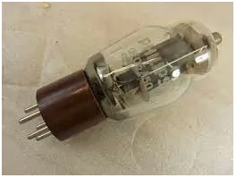
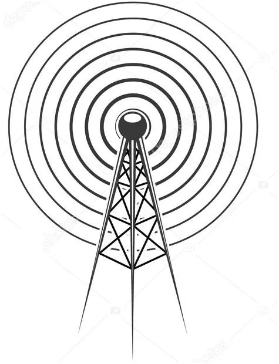
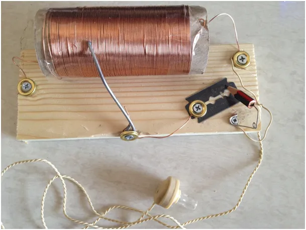

Radio, co to jest i jak można je zrobić z żyletki i ołówka !
Mamy XXI wiek, wszystko jest na prąd i otacza nas smog elektromagnetyczny, niewidzialny zgiełk zaburzeń kosmicznego pola, które jest jak Yeti: jest w całym kosmosie, ale widać je dopiero, gdy się ruszy. Jesteśmy otoczeni tysiącami nadajników i odbiorników radiowych (wi-fi , komórki, itp.) i rzadko się zastawiamy już co to jest radio. Radio ma ponad 100 lat historii i zmieniło świat, ale co to jest to radio? Fala radiowa to zaburzenie pola elektromagnetycznego w przestrzeni spowodowane zmianami w przepływie prądu w przewodniku, czyli antenie nadawczej. Ekstremalnym przykładem nadajnika radiowego jest błyskawica podczas burzy, gwałtowna zmiana natężenia prądu, bo prądem jest błyskawica, powoduje, że radia trzeszczą a telewizory migoczą. W tej sytuacji przewodnikiem staje się mokre powietrze, które zwykle jest izolatorem, ale napięcie elektryczne między Ziemią i chmurami jest tak olbrzymie, że dochodzi do przeskoku gigantycznej iskry, czyli przepływu prądu. To, co widzimy na niebie to strumień plazmy, czyli zjonizowanego gazu.

Jeśli zaburzamy prąd w rytm ludzkiej mowy przy użyciu mikrofonu, to możemy tę informację przesłać dosłownie przez cały kosmos z prędkością światła. Radio technicznie to detektor, coś co sprawi, że zostanie odcięte pół sygnału, taki trick geniuszu ludzkiego. Przed półprzewodnikami służyły do tego lampy elektronowe. Taka lampa, aby działać, musi mieć rozgrzany do czerwoności jeden z elementów tj. katodę, aby emitowała elektrony, napięcia potrzebne do działania takiej lampy to tysiące woltów! Takie radio ważyło wiele kilogramów i drugie tyle ważył akumulator do niego, a działało zaledwie kilka godzin. Długo przed wynalezieniem półprzewodników żołnierze w okopach I Wojny Światowej robili sobie z drutu, żyletki i ołówka radia jak na obrazku. Takie radio nie potrzebuje żadnego zasilania, dźwięk w słuchawkach powstaje dzięki energii fali radiowej niesionej tysiące kilometrów z nadajnika. Tajemnica tkwi na styku grafitu ołówka i żyletki, najlepsi fachowcy zgrzewali te elementy prądem z samochodowego akumulatora poprzez krótkie zwarcie. Na styku tych dwóch materiałów powstaje namiastka diody detekcyjnej.

Takie radio było w okopach nie lada rozrywką, ale i źródłem wiedzy o sytuacji na froncie. Zima sprzyja majsterkowaniu, polecam! Jak komuś braknie cierpliwości z żyletką to diody germanowe są po 4 zł.
P.s. Dobra brzytwa ze zestali węglowej zamiast żyletki zadziała.

Paweł Klimczewski